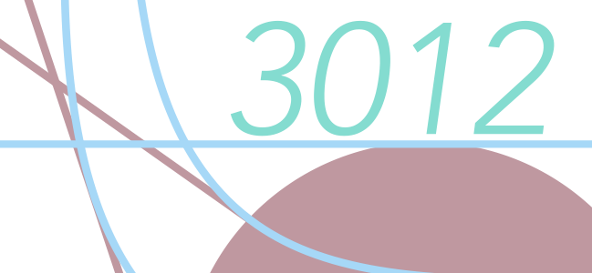

Class Notes (Small Screen Version)
This is the course website for Vanderbilt Economics 3012. This course focuses on the formal analysis of the behavior of individuals and firms and how these behaviors aggregate in a market. We will analyze market performance and determine how performance is influenced by various changes. This page will be continuously updated throughout the semester. Please check it on a regular basis.
Some concepts and formulas from differential calculus will be used, but most of the presentations, homework and exams will involve diagrams, algebra and analytic reasoning. A review of the relevant mathematical concepts will occur on the first day of class.
Problem sets will consist of selections from problems in the workouts book, as well as problems I have written. The problem sets will be posted on this page in the schedule below. I encourage working on the homework in groups. The homework will be graded by the teaching assistant.
There will be one midterm and a final exam. They are tentatively placed in the schedule below. Grading will be based 30% on midterm exam, 50% on the final exam, and 20% on homework.
Greg's office hours: TBA. TA: TBA.
Budget Constraint, Preferences. Please Read: Review of Functions.
Preferences, Utility.
Choice.
Demand.
Slutsky Equation, Buying and Selling
Buying and Selling, Intertemporal Choice
Market Demand
Midterm exam covering material up to and including Market Demand. Key Concepts- Updated for Spring 22.
Copy of 2022 Midterm
Midterm Exam, Equilibrium
Equilibrium
echnology, Profit Maximization
Cost Minimization, Firm Supply
Industry Supply, Monopoly
Monopoly Behavior
Oligopoly
Key Concepts- Updated for Spring 22.
Selected Solutions for Practice Problems (Updated 12/15/2021)
Problems Relevant to 2022 Final: 1,2,3,4,5,6,7,8,11,12,15,16,17,18,19,20,21,22 (Except D,E),23,24,25,26 (Only D,E),27,28 (Except B,D),32